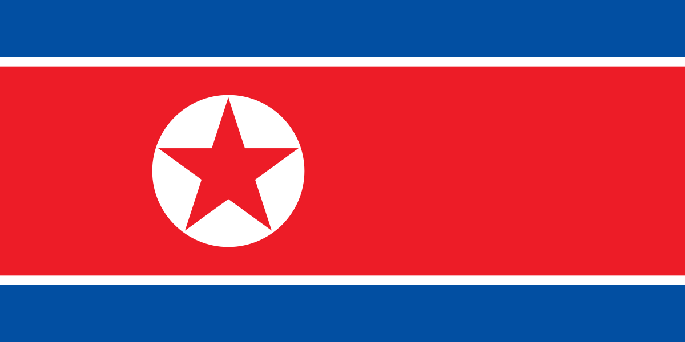
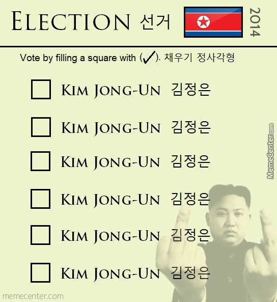
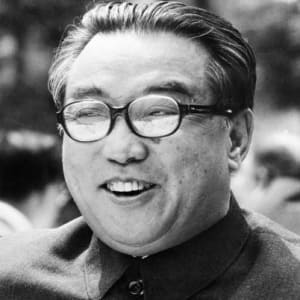
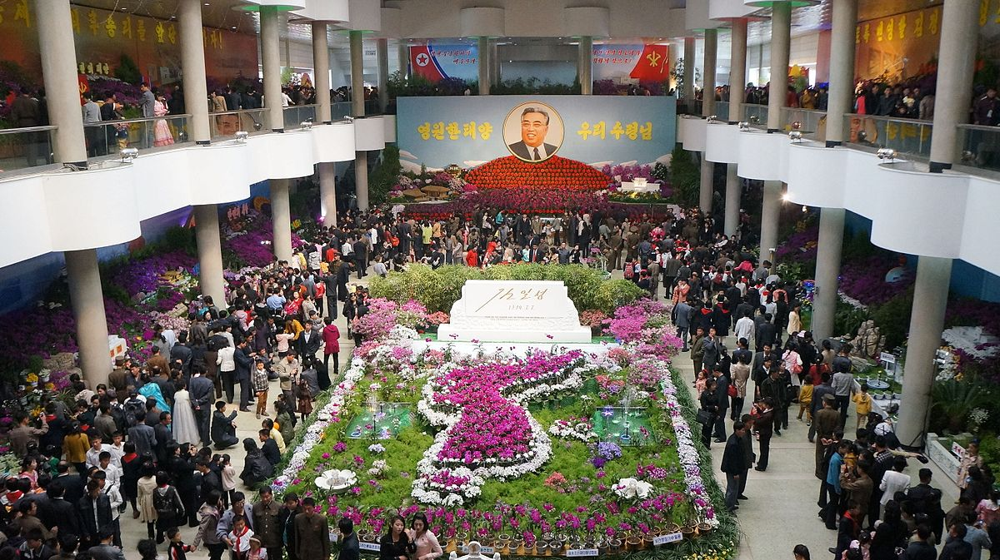
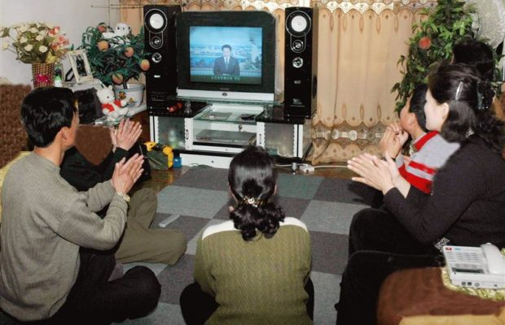
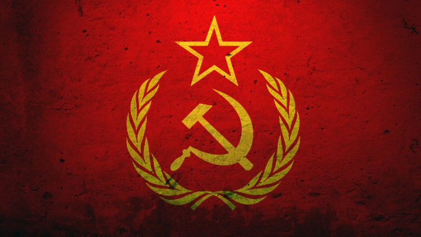
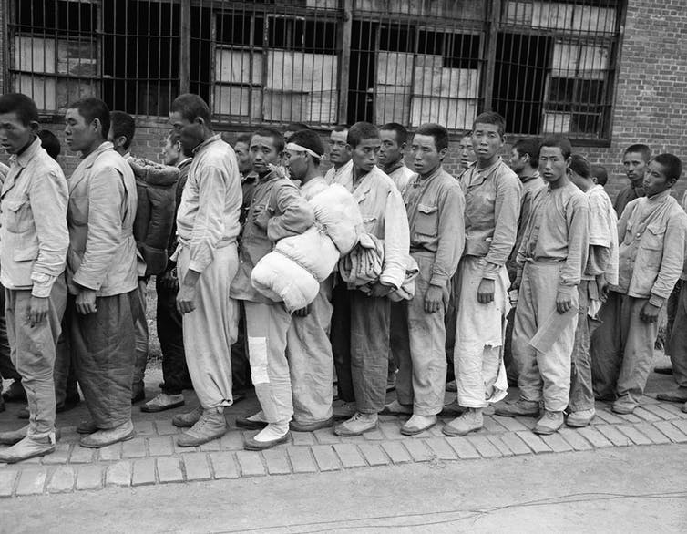
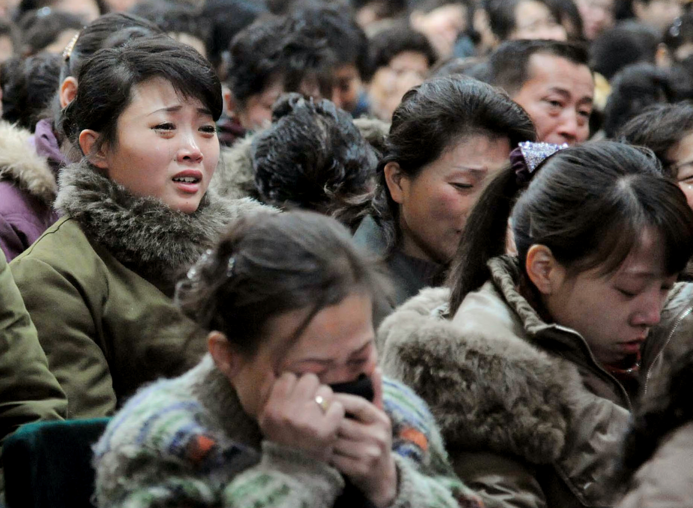

North Korea bases its calendar on Kim Il-Sung's date of birth: 15 April 1912.
In Koreea is actualy the year 107 rigth now.

North Korea hands out ballots with only one option on them,
so votes swing, you guessed it, 100% for the leader.

Kim Il-sung will always be considered North Korea's eternal
leader, even though his heirs have taken the reigns.

Kim Jong-il's body is preserved in a glass tomb for anyone, including outside tourists, to see.

There are only 3 tv-chanels in North Koreea.Two of which are only available on weekends, while the other is
broadcast in the evenings. Because of this,
South Korean soap operas are among the most popular items smuggled in.

North Korea claims to operate under the "Juche"
ideology, or "rejecting dependence on others,
using one’s own brains, and believing in one’s own strength,"
according to Kim Il-Sung. Although not technically
Communist, many of these ideas stem from ideologies of previous
Communist leaders.

There are aproximatevly 200000 prisoners in work camps.
A growing number of prisoners continue to fill the estimated 16 work camps.

Half of the population of North Korea is living in extreme poverty
This means half of the 24 million people don't even have access to basic human needs.